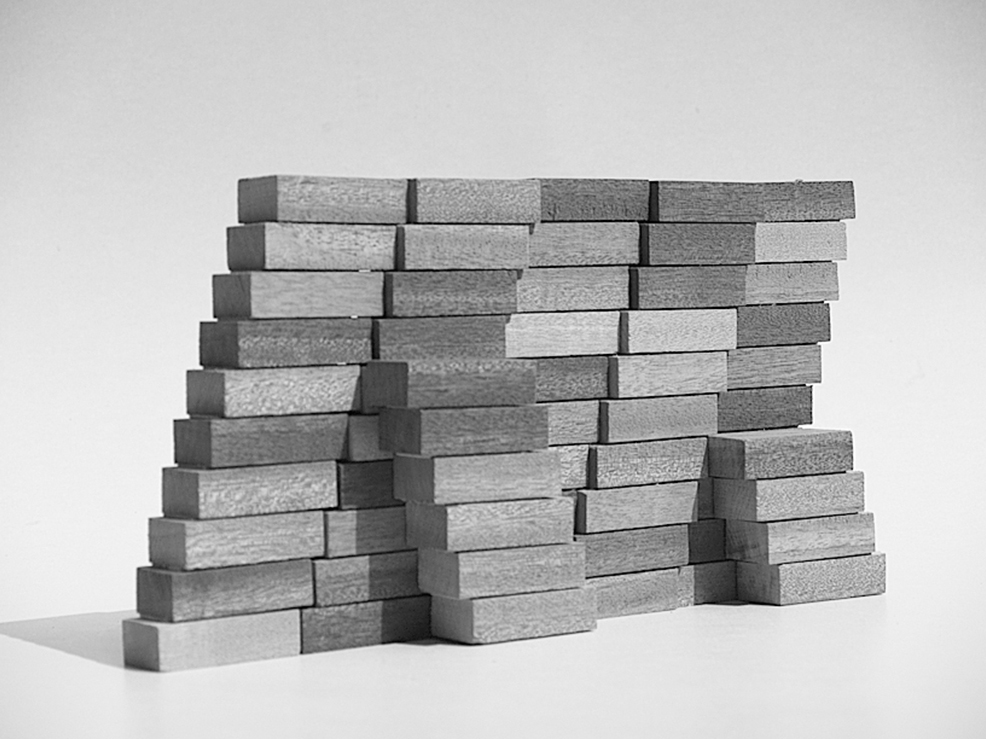

1/3 – o. T., Wandgestaltung, 1970, Relief, geweißte Hüttensteine, 3,5 x 20 m, Hochschule für Musik Saar, Saarbrücken

2/3 – o. T., Wandgestaltung, 1970, Relief, geweißte Hüttensteine, 3,5 x 20 m, Hochschule für Musik Saar, Saarbrücken
3/3 – o. T., Wandgestaltung, 1970, Relief, geweißte Hüttensteine, 3,5 x 20 m, Hochschule für Musik Saar, Saarbrücken
Wenn du das Gebäude betrittst, stößt du rechterhand unmittelbar auf das Backsteinrelief. Es ist an der Außenwand des großen Musiksaals angebracht und markiert das Herzstück der Hochschule.
Mehr...
Gehst Du daran vorüber, begleitet das Relief aus weißen Steinen deine Bewegungen. Aus der Fläche erheben sich durch das Vor- und Zurückstehen der Steine, über die gesamte Wandhöhe, diagonale Formen. Sie scheinen sich aufeinander zu zu bewegen und dann wieder voneinander weg. Das Relief fordert Dich geradezu auf, den pfeilartig angeordneten Formvariationen zu folgen. Diese Bewegung wirkt besonders plastisch, weil die einzelnen Steine zusammen eine Struktur erzeugen, die ganz stark mit Schattenwirkungen spielt. Je nach Lichteinfall und Perspektive kommt das Relief hervor oder es tritt zurück. Du kannst diesen Formen, ihren tänzerischen Bewegungen und ihrem Zusammenspiel im Vorbeigehen folgen wie einer Komposition.
Artikel im Kunstlexikon Saar
Der Backstein wurde für mich zum ‘Ton’, den ich visuell zum Klingen bringen musste. Das regelmäßig definierte, stereometrische Element des Steins wurde durch serielle und kompositorische Anwendung Grundelement der Gesamtgestaltung. Auch hier sind für die Gesamtlösung zwei wichtige Entscheidungen getroffen worden: einmal die Bezugnahme auf die räumliche Situation und zum anderen die rhythmisierende Gliederung. Darüber hinaus war wichtig, dass durch Bewegung des Betrachters die Wand sich insgesamt erschließt. Vor die Grundfläche der Wand, die geometrisch streng mit senkrechten und waagerechten Fugen gemauert ist, lagern sich die kompositionsbestimmenden Diagonalteile, wiederum in verschiedenen Ebenen ausgeführt und bestimmt durch eine komplexe zentrale Form, die sich nach den Seiten hin in ihrer Komplexität vereinfachend auflöst. (Jo Enzweiler)